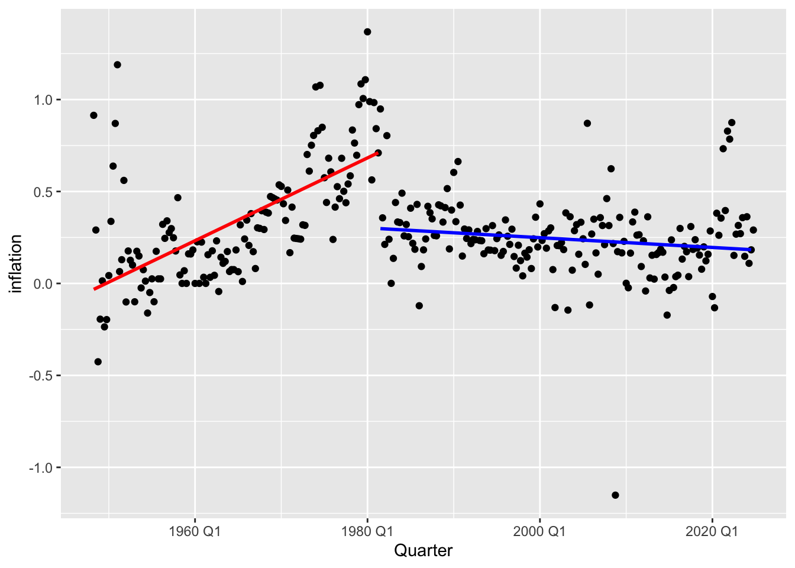
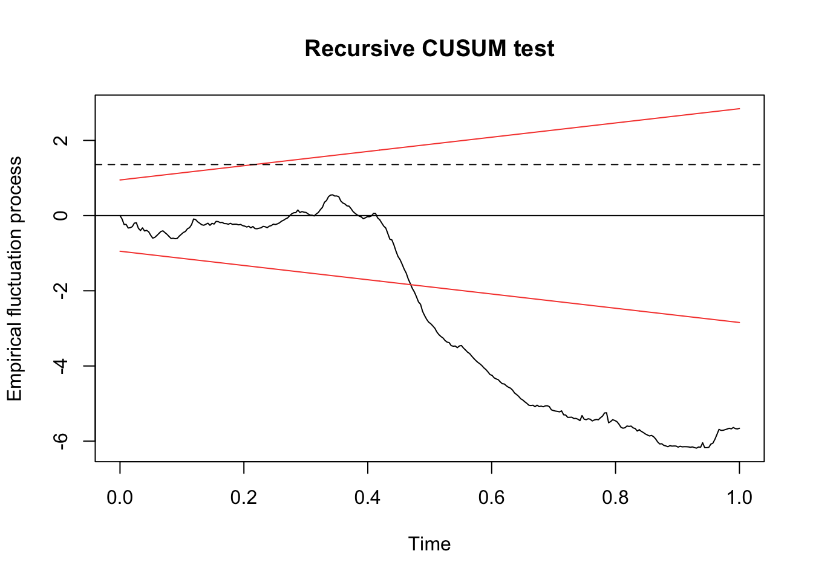
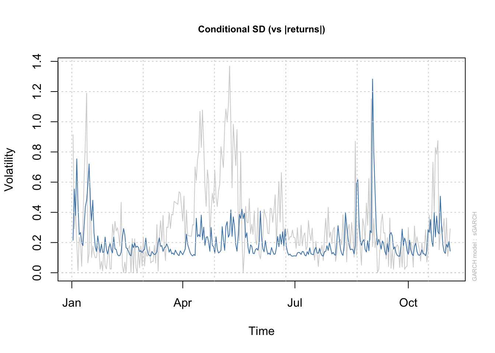

Let’s model inflation (\(\pi_t\)) with Unemployment, GDP growth, and CPI (lagged). The relationship can be written as: \[\pi_t = \beta_0 + \beta_1 \text{Unemployment}_t + \beta_2 \text{CPI}_{t-1} + \beta_3 \text{GDP\_growth}_t + \epsilon_t\]
There are a lot of dynamics as play here. GDP growth (\(\text{GDP\_growth}\)) may signal demand-pull inflationary pressures, while unemployment (\(\text{Unemployment}_t\)) and lagged CPI (\(\text{CPI}_{t-1}\)) capture labor market slack and inertial price effects. However, structural breaks—such as shifts in productivity regimes, fiscal/monetary policy pivots, or global supply chain disruptions—can alter the sign, magnitude, or significance of these relationships over time.
Detect breaks in all coefficients: Do a Chow test to identify shifts in \(\beta_1\) (unemployment’s impact), \(\beta_2\) (CPI persistence), and\(\beta_3\) (GDP growth sensitivity). For example, a break in \(\beta_3\) might reflect a transition from a high-growth, high-inflation era to a stagflationary regime.
Segmented regression with regime-specific GDP effects: Estimate \[Y_t = \beta_0^{(k)} + \beta_1^{(k)}\text{Unemployment}_t + \beta_2^{(k)}\text{CPI}_{t-1} + \beta_3^{(k)}\text{GDP\_growth}_t + \epsilon_t^{(k)}\] for each regime \(k\). This reveals whether GDP growth amplifies inflation in certain eras (e.g., post-recession recoveries) but not others (e.g., during secular stagnation).
STL decomposition: Separate the trend component of inflation to distinguish whether GDP-driven fluctuations are cyclical (e.g., business cycle upswings) or structural (e.g., sustained growth-inflation linkages post-break).
<yearquarter[1]>
[1] "1981 Q3"
# Year starts on: January
# Fit segmented regressionsegmented_model <-lm(inflation ~ GDP_growth + Unemployment + CPI, data = combined_data, subset =breakpoints(bp)$breakpoints)
# Get breakpoint indices bp_indices <- bp$breakpoints # Split data into segmentssegments <-split(combined_data, findInterval(1:nrow(combined_data), vec =c(0, bp_indices, nrow(combined_data))))# Fit models to each segmentsegment_models <-lapply(segments, function(df) {lm(inflation ~ GDP_growth + Unemployment + CPI, data = df)})# Combine residuals from all segmentsall_residuals <-unlist(lapply(segment_models, residuals))
# Plot segmented regressionsggplot(combined_data, aes(y =inflation, x=Quarter)) +geom_point() +geom_smooth(data = segments[[1]], method ="lm", se =FALSE, color ="red") +geom_smooth(data = segments[[2]], method ="lm", se =FALSE, color ="blue")

labs(title ="Segmented Regression by Breakpoints")
$title
[1] "Segmented Regression by Breakpoints"
attr(,"class")
[1] "labels"
lapply(segment_models, summary) # Show coefficients for each regime
$`1`
Call:
lm(formula = inflation ~ GDP_growth + Unemployment + CPI, data = df)
Residuals:
Min 1Q Median 3Q Max
-0.54820 -0.13847 -0.02989 0.09587 0.82094
Coefficients:
Estimate Std. Error t value Pr(>|t|)
(Intercept) -0.058009 0.075275 -0.771 0.44234
GDP_growth 0.043044 0.014900 2.889 0.00454 **
Unemployment -0.065806 0.016283 -4.041 9.08e-05 ***
CPI 0.017150 0.001512 11.344 < 2e-16 ***
---
Signif. codes: 0 '***' 0.001 '**' 0.01 '*' 0.05 '.' 0.1 ' ' 1
Residual standard error: 0.219 on 129 degrees of freedom
Multiple R-squared: 0.5898, Adjusted R-squared: 0.5802
F-statistic: 61.82 on 3 and 129 DF, p-value: < 2.2e-16
$`2`
Call:
lm(formula = inflation ~ GDP_growth + Unemployment + CPI, data = df)
Residuals:
Min 1Q Median 3Q Max
-1.13994 -0.09999 -0.00866 0.07742 0.59785
Coefficients:
Estimate Std. Error t value Pr(>|t|)
(Intercept) 0.2451342 0.0946348 2.590 0.0104 *
GDP_growth 0.0731280 0.0128770 5.679 5.8e-08 ***
Unemployment -0.0057675 0.0089472 -0.645 0.5200
CPI -0.0003466 0.0002783 -1.245 0.2148
---
Signif. codes: 0 '***' 0.001 '**' 0.01 '*' 0.05 '.' 0.1 ' ' 1
Residual standard error: 0.1956 on 169 degrees of freedom
Multiple R-squared: 0.1874, Adjusted R-squared: 0.173
F-statistic: 12.99 on 3 and 169 DF, p-value: 1.118e-07
$`3`
Call:
lm(formula = inflation ~ GDP_growth + Unemployment + CPI, data = df)
Residuals:
ALL 1 residuals are 0: no residual degrees of freedom!
Coefficients: (3 not defined because of singularities)
Estimate Std. Error t value Pr(>|t|)
(Intercept) 0.2905 NaN NaN NaN
GDP_growth NA NA NA NA
Unemployment NA NA NA NA
CPI NA NA NA NA
Residual standard error: NaN on 0 degrees of freedom
Activities
Parameter Stability Assessment
Q1: Test if the employment-inflation relationship remains stable using recursive residuals
library(dynlm)rolling_residuals <-efp(inflation ~ GDP_growth + Unemployment + CPI, data = combined_data, type ="Rec-CUSUM")# Plot and interpret:plot(rolling_residuals)abline(h =1.358, lty =2) # 95% significance boundary

Task: Explain what crossing the dashed line implies about parameter stability. How does this complement the Chow test results?
Time-Varying Volatility Analysis
Q2: Model volatility changes using GARCH(1,1)
library(rugarch)garch_spec <-ugarchspec(variance.model =list(model ="sGARCH", garchOrder =c(1,1)),mean.model =list(armaOrder =c(1,1)))garch_fit <-ugarchfit(garch_spec, data = combined_data$inflation)# Plot conditional volatilityplot(garch_fit, which =3)

Task: Identify periods of high volatility clustering. Could these coincide with structural breaks in mean relationships?
Task: When does employment become negatively correlated with inflation? How does this relate to Phillips curve theory? The Phillips Curve is an economic theory describing an inverse relationship between unemployment and inflation, first observed by A.W. Phillips (1958) using UK wage data.